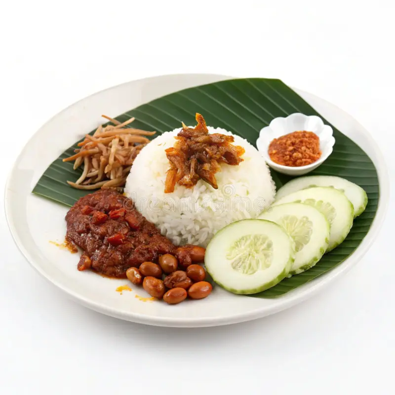

Nasi Lemak

Nasi lemak is a dish originating in Malay cuisine that consists of rice cooked in coconut milk and pandan leaf. It is
commonly found in Malaysia, where it is considered the national dish. It is also a native dish in neighbouring areas
with significant ethnic Malay populations, such as Singapore and Southern Thailand.
Curry Laksa
 Curry laksa (also goes by curry mee, laksa lemak, Nyonya laksa) is a much richer rendition with a coconut milk-based
broth that's poured over noodles and garnished with tofu puffs, shrimp, and egg. If you hear someone describe a dish as just "laksa," this is usually (but not always) what they're talking about.
Curry laksa (also goes by curry mee, laksa lemak, Nyonya laksa) is a much richer rendition with a coconut milk-based
broth that's poured over noodles and garnished with tofu puffs, shrimp, and egg. If you hear someone describe a dish as just "laksa," this is usually (but not always) what they're talking about.